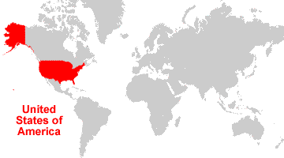
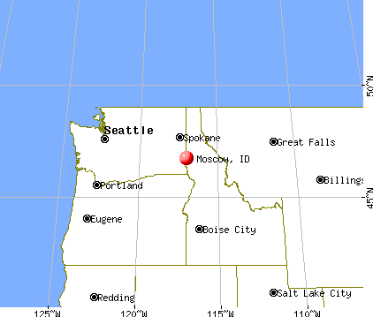
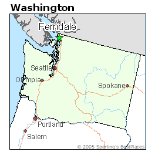
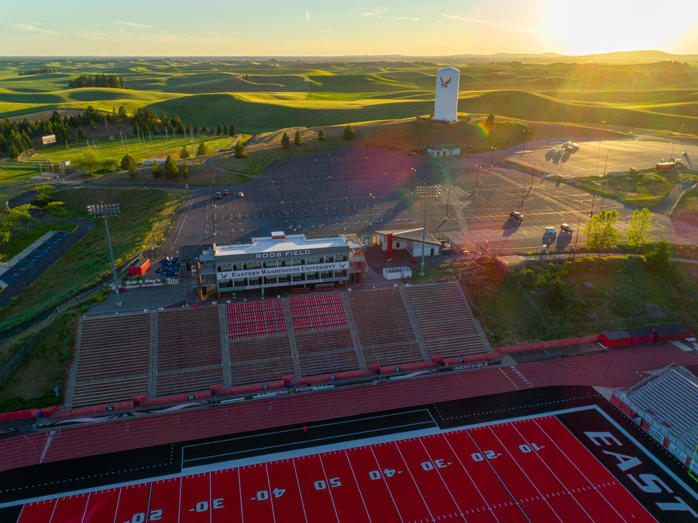
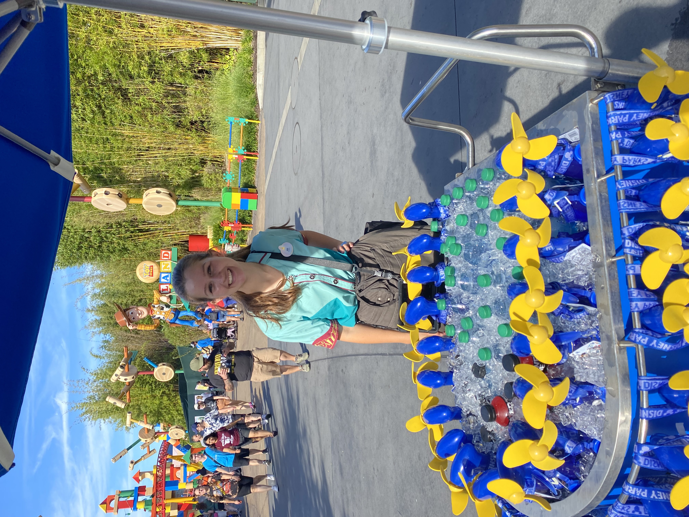
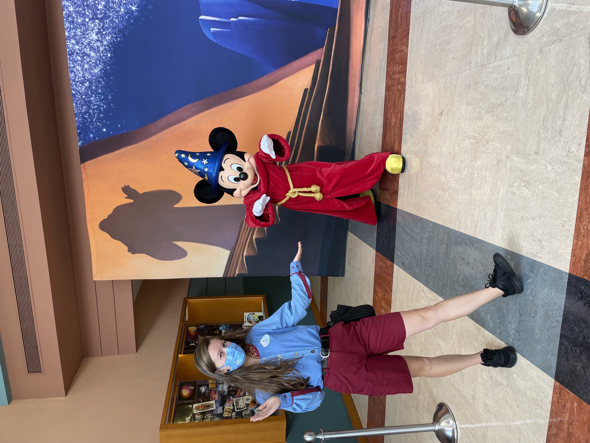
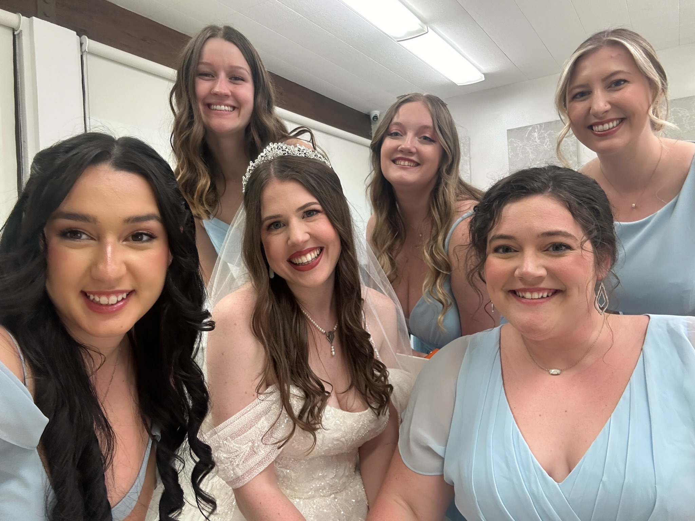
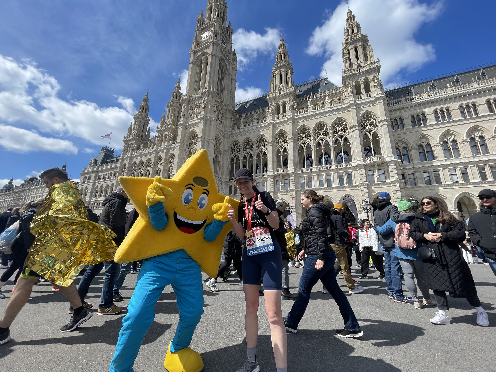

World map showing USA
I am from the United States and have lived there my entire life until I moved to Austria in 2022 to study.
I was born in a small town in Idaho, but I moved to Washington state when I was 4 and stayed there pretty much since then.


University of Washington campus
I started my undergraduate degree in 2018 at the University of Washington.
After two quarters I transfered to Western Washington University, and then the following year I began studying at Eastern Washington University.
In 2021 I graduated Suma Cum Laude with a Major in Mathematics and Minors in Spanish and Computer Science.



My typical shift working at Disney World
Between finishing my undergraduate degree and starting my Master's, I briefly worked at Walt Disney World in Flordia.
My family vacationed there often when I was growing up, and it was a lifelong dream of mine to get to live there for a bit.
I made many friends working there, and when I had to miss the last online lecture for this class it was because I was a bridesmaid in the wedding of a friend I had made there.

Uni Vie main building
Currently I am in my Master's Degree of Data Science at the University of Vienna.
I also work part time in the Trade Finance department at RBI.
My hobbies include running and reading, and I recently ran the Vienna City Half Marathon.